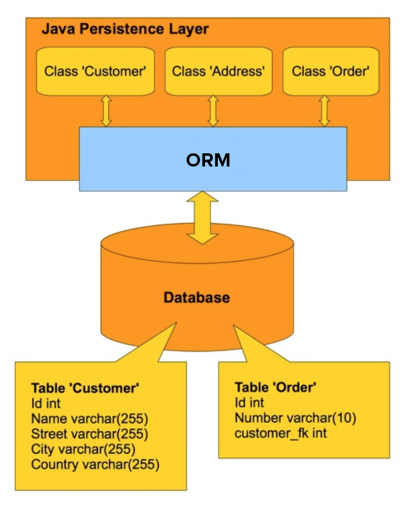
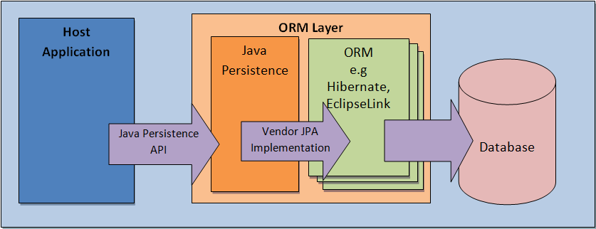
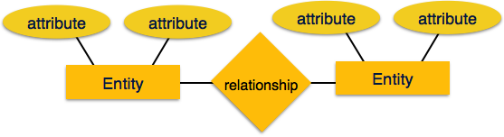
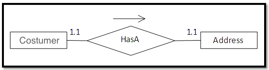

Created by <Academia de Código_>
By default, JDBC Connections are in auto-commit mode and every SQL statement is committed to the database upon its completion
That is ok for simple applications, but there are reasons why you may want to turn off the auto-commit and manage your own transactions:
Transactions enable you to control if and when changes are applied to the database. It treats a group of SQL statements as one logical unit, and if any statement fails, the whole transaction fails
try {
connection.setAutoCommit(false);
Statement statement = connection.createStatement();
String query = "INSERT INTO user " + "VALUES ('Rui', 'rui.ferrao@academiadecodigo.org')";
statement.executeUpdate(query);
// Malformed SQL statement that breaks
query = "INSERT IN user " + "VALUES ('Catarina', 'catarina.campino@academiadecodigo.org')";
statement.executeUpdate(query);
// If no errors, both users will be inserted
connection.commit();
} catch(SQLException e){
// Error occurred, no user will be inserted
connection.rollback();
}
Locking is a RDBMS feature that prevents users from different transactions from causing data conflicts. When locking is acquired on a row, it prevents other transactions from changing that row until the transaction ends
When too many rows are locked simultaneously, the RDBMS can escalate the lock into a full table lock
Without a locking mechanism, the changes that User 1 made on the record are lost forever
The pessimistic locking mechanism is provided by the RDBMS and locks the record when it is read
Locks are always released when the transaction is committed or rolled back
Pessimist locking introduces a problem in application design... poor concurrency
The solution is to use an optimistic locking mechanism instead which does not use exclusive locks when reading. Instead, a check is made during the update to make sure that the record has not been changed since it was read. This check can be implemented by introducing a version attribute to the table
UPDATE user SET name = 'Rui', version = 22 WHERE id = 1 and version = 21
UPDATE user SET email = 'rui.ferrao@academiadecodigo.org', version = 22 WHERE id = 1 and version = 21
Technical difficulties are often encountered when a RDBMS is being used by a program written in an object-oriented programming language
| Mismatch | Description |
|---|---|
| Granularity | Sometimes you will have an object model which has more classes than the number of corresponding tables in the database |
| Inheritance | RDBMSs do not define anything similar to Inheritance which is a natural paradigm in object-oriented programming languages |
| Identity | A RDBMS defines exactly one notion of equality: the primary key. Java, defines both object identity (a==b) and object equality (a.equals(b)) |
| Associations | Object-oriented languages represent associations using object references where a RDBMS represents an association as a foreign key column |
| Navigation | The ways you access objects in Java and in a RDBMS are fundamentally different |
The basic idea of ORM is to map database tables to a class. One row of the database data is copied to a class instance. On the other hand, if an object is saved, one row is inserted in the database table.
JPA is not an implementation, but a specification
Provides portability across different JPA implementations
Standardized API and query language (JPQL)
High performance object/relational persistence and query framework
In JPA data is persisted through Entity Classes
Each entity class instance represents a row on a database table
Primary interface of the JPA, abstracts the physical connection to the database
Entity Managers are:
Entity Managers are responsible for managing JPA entity objects in the persistence context
The place where the persistent entities are created, modified and retrieved
Acts as a first level (L1) cache for persisted entities
Accessible by Entity Manager only
An entity class instance can have four possible states regarding the persistence context:


<!-- pom.xml -->
<dependencies>
<dependency>
<groupId>org.hibernate</groupId>
<artifactId>hibernate-core</artifactId>
<version>5.3.6.Final</version>
</dependency>
<dependency>
<groupId>org.hibernate.javax.persistence</groupId>
<artifactId>hibernate-jpa-2.1-api</artifactId>
<version>1.0.0.Final</version>
</dependency>
<dependency>
<groupId>mysql</groupId>
<artifactId>mysql-connector-java</artifactId>
<version>8.0.12</version>
</dependency>
</dependencies>
<!-- /META-INF/persistence.xml -->
<persistence xmlns="http://xmlns.jcp.org/xml/ns/persistence" version="2.1">
<persistence-unit name="test" transaction-type="RESOURCE_LOCAL">
<!-- provider element declares the class that provides the initial factory
for creating an EntityManager instance -->
<provider>org.hibernate.jpa.HibernatePersistenceProvider</provider>
<properties>
<property name="hibernate.connection.driver_class" value="com.mysql.cj.jdbc.Driver"/>
<property name="hibernate.connection.url" value="jdbc:mysql://localhost:3306/ac"/>
<property name="hibernate.dialect" value="org.hibernate.dialect.MySQL8Dialect"/>
<property name="hibernate.connection.username" value="root"/>
<property name="hibernate.connection.password" value=""/>
<property name="hibernate.archive.autodetection" value="class"/>
<property name="hibernate.show_sql" value="true"/>
<property name="hibernate.format_sql" value="true"/>
<property name="hibernate.hbm2ddl.auto" value="create"/>
</properties>
</persistence-unit>
</persistence>
Hibernate can
automatically validate or create a database schema
// Use the test persistence unit to configure a new
// entity manager factory and start up JPA
EntityManagerFactory emf = Persistence.createEntityManagerFactory("test");
// Open a new database connection by getting a new
// entity manager from the entity manager factory
EntityManager em = emf.createEntityManager();
// Used to test the database connection, should return 2
System.out.println("Result: " +
em.createNativeQuery("select 1 + 1").getSingleResult());
// Close the database connection
em.close();
// Shutdown JPA
emf.close();
The ER model is a way of graphically representing the logical relationships of entities in order to create a database
An Entity may be defined as a thing capable of an independent existence that can be uniquely identified. It is an abstraction of something that exists either physically or logically
Entities are represented by means of their properties, called Attributes. For example, a student entity may have name, class, and age as attributes.
The association among entities is called a Relationship. For example, an employee works at a department, a student enrolls in a course.
Entity classes describe the mapping between the persistable domain model objects and a database table row
@Entity
@Table(name = "user") // model the database user table
public class User {
@Id // models the primary key of the entity
private Integer id;
private String name;
private String email;
@Transient // exclude field from the persistent state
private String password;
// getters and setters
}
Using a lower case database name makes your code portable
Values for entity identifiers can be automatically generated by Hibernate when saving or persisting
Four different identifier generation strategies are available:
@Entity
public class User {
@Id
@GeneratedValue(strategy = GenerationType.IDENTITY)
private Integer id;
}
By default, pessimistic locking (database locking) is used, but Hibernate can perform automatic optimistic concurrency control with javax.persistence.Version
Creation and update timestamps can be added using org.hibernate.annotations.CreationTimestamp and org.hibernate.annotations.UpdateTimestamp
@Entity
public class User {
@Id
@GeneratedValue(strategy = GenerationType.IDENTITY)
private Integer id;
@Version
private Integer version;
@CreationTimestamp
private Date creationTime;
@UpdateTimestamp
private Date updateTime;
private String name;
private String email;
}
Fetching is the process of grabbing data from the database and making it available to the application
em.find()
@Override
public User findById(Integer id) {
// open a new connection to the database
EntityManager em = emf.createEntityManager();
try {
// fetch a new user using its id
return em.find(User.class, id); // always the primary key
} finally {
// make sure we close the database connection
if (em != null) {
em.close();
}
}
}
An EntityManager is an inexpensive, non-threadsafe object that should be used once
em.merge() OR em.persist()
@Override
public Customer saveOrUpdate(Customer customer) {
EntityManager em = emf.createEntityManager();
try {
em.getTransaction().begin(); // open transaction
Customer savedCustomer = em.merge(customer);
em.getTransaction().commit(); // close transaction
return savedCustomer;
} catch (RollbackException ex) {
// something went wrong, make sure db is consistent
em.getTransaction().rollback();
return null;
} finally {
if (em != null) {
em.close();
}
}
}
@Override
public Customer saveOrUpdate(Customer customer) {
...
em.persist(customer);
// address update will be persisted in the database
customer.setAddress(new Address("Fundão"));
...
}
@Override
public Customer saveOrUpdate(Customer customer) {
...
Customer persistedCustomer = em.merge(customer);
// address update will not be persisted in the database
// because update was made after merging
customer.setAddress(new Address("Fundão"));
// address update will be persisted because update was
// not made in original entity but in persisted copy
persistedCustomer.setAddress(new Address("Fundão"));
...
}
JPA API classes are found on the javax.persistence.* package
Configure an entity class with optimistic lock and timestamps
use hibernate hbm2ddl to create the database schema
and persist and retrieve a few entity objects
Composition relationships are called components and can be mapped as a single table
Customer entity Has A Address value
@Embeddable
public class Address {
private String street;
private String city;
private String zipcode;
}
@Entity
@Table(name = "student")
public class Student {
@Id
private Integer id;
private String name;
@Embedded
private Address address;
}
Key concept in Java, but relational databases do not support it
Different strategies exist to map inheritance to the relational world:
Choose the right strategy according to the need
@MappedSuperclass
public abstract class AbstractModel {
@Id
@GeneratedValue(strategy = GenerationType.IDENTITY)
private Integer id;
@Version
private Integer version;
@CreationTimestamp
private Date creationTime;
@UpdateTimestamp
private Date updateTime;
}
@Entity
@Table(name = "customer")
public class Customer extends AbstractModel {
private String name;
}
@Entity
@Table(name = "account")
public class Account extends AbstractModel {
private Double balance;
}
@Entity(name="BoatSingleTable")
@DiscriminatorValue("boat")
public class Boat extends Vehicle {
private Integer engines;
}
@Entity (name="CarSingleTable")
@DiscriminatorValue("car")
public class Car extends Vehicle {
private Integer gears;
}
@Entity(name="VehicleSingleTable")
@Table(name = "vehicle_single_table")
@Inheritance(strategy = InheritanceType.SINGLE_TABLE)
@DiscriminatorColumn(
name = "vehicle_type",
discriminatorType = DiscriminatorType.STRING
)
public abstract class Vehicle {
@Id
private Integer id;
private Integer maxSpeed;
}
@Entity
@Table(name = "boat_table_per_class")
public class Boat extends Vehicle {
private Integer engines;
}
@Entity
@Table(name = "car_table_per_class")
public class Car extends Vehicle {
private Integer gears;
}
@Entity
@Inheritance(strategy = InheritanceType.TABLE_PER_CLASS)
public abstract class Vehicle {
@Id
@GeneratedValue(strategy = GenerationType.SEQUENCE)
private Integer id;
private Integer maxSpeed;
}
@Entity(name = "BoatJoinedTable")
@Table(name = "boat_joined_table")
public class Boat extends Vehicle {
private Integer engines;
}
@Entity(name = "CarJoinedTable")
@Table(name = "car_joined_table")
public class Car extends Vehicle {
private Integer gears;
}
@Entity(name = "VehicleJoinedTable")
@Table(name = "vehicle_joined_table")
@Inheritance(strategy = InheritanceType.JOINED)
public abstract class Vehicle {
@Id
private Integer id;
private Integer maxSpeed;
}
Options to consider:
Represent relationships between entities and can be one of:
There is no directionality involved in the relational world, it's just a matter of writing a query. But there is directionality in Java and because of this, associations can be:
@Entity
@Table(name = "car")
public class Car {
@Id
private Integer id;
private String make;
private String model;
@OneToOne
private Owner owner; // for bidirectionality
}
@Entity
@Table(name = "owner")
public class Owner {
@Id
private Integer id;
private String name;
// mappedBy is required for bidirectional associations, and it tells hibernate
// to use the user foreign key on the Car table to define the Owner
@OneToOne(mappedBy = "owner")
private Car car;
}
The most common cascade types are:
The JPA @Cascade annotation can be used to specify the type of cascade:
@Entity
public class Owner {
@Id
private Integer id;
private String name;
@OneToOne(
// propagate changes on Owner entity to Car entities
cascade = {CascadeType.ALL},
// Owner removal will remove Car due to cascade, but this property makes
// sure we also remove the Car if unlinked from Owner (orphaned)
orphanRemoval = true,
// mappedBy is required for bidirectional associations, and it tells hibernate
// to use the user foreign key on the Car table to define the Owner
mappedBy = "owner"
)
private Car car;
}
Persist and fetch both Car and Owner entities by using
JPA API methods (persist/merge/find)
only on Owner entities
@Entity
@Table(name = "product")
public class Product {
@Id
private Integer id;
private String name;
@ManyToOne
private Category category; // for bidirectionality
}
@Entity
@Table(name = "category")
public class Category {
@Id
private Integer id;
private String name;
@OneToMany(
cascade = {CascadeType.ALL},
orphanRemoval = true,
// use Category foreign key on Product table to establish
// the many-to-one relationship instead of a join table
mappedBy = "category"
)
private Set<Product> products;
// utility method to update both sides of the association
public void addProduct(Product product) {
products.add(product);
product.setCategory(this);
}
}
When using a Set for storing entity instances, the equality of the entity classes needs to be properly defined
What properties should be used to define Equality?
With generated identifiers, Hibernate will only assign an identifier when an entity is persisted. Meaning that when inserting into a Set the id might be null
It is recommended to use Business key equality - the id key plus the natural properties that would identify our object
Remember the equals-hashCode contract, when you override one, you probably need to override the other!Persist a Category entity with multiple Products associated by using
JPA API methods (persist/merge/find)
only on Category
@Entity
@Table(name = "user")
public class User {
@Id
private Integer id;
private String username;
private String password;
@ManyToMany(
// fetch all security groups when fetching a user
fetch = FetchType.EAGER
)
private List<SecurityGroup> sgroups;
// utility methods to update both sides of the relationship
}
@Entity
@Table(name = "sgroup")
public class SecurityGroup {
@Id
private Integer id;
private String name;
@ManyToMany(
// mappedBy required for bidirectional association
mappedBy="sgroups",
// delay fetching users until they are actually needed
fetch = FetchType.LAZY
)
private List<User> users;
}
JPA supports both lazy and eager fetching:
Which one should we use?
Eager is convenient, but slower...
Lazy might not provide enough data and we can either get Lazy Loading Exceptions (if entity is detached) or experience multiple trips back and forth to the database to get the required data.
@Entity
public class User {
@Id
private Integer id;
@ManyToMany (
fetch = FetchType.EAGER
)
private List<String> aliases;
}
Persist and fetch multiple User and SecurityGroup entities by using JPA API
methods (persist/merge/find)
only on User
Fetching or persisting a user should fetch and persist all associated security groups
Fetching or persisting a security group should not fetch neither persist all associated users
JPQL is an Object Oriented query language for performing queries
It is very similar to SQL, but queries the entity model instead of tables and supports
// fetch a list of users with a given name
@Override
public List<User> findByName(String name) {
EntityManager em = emf.createEntityManager();
try {
TypedQuery<User> query =
em.createQuery("SELECT user FROM User user WHERE user.name = :name", User.class);
query.setParameter("name", name);
return query.getResultList();
} finally {
if (em != null) {
em.close();
}
}
}
User is the entity being queried,
user is an identification variable
JPQL is a non type-safe way to perform query operations
Criteria queries are a
programmatic and type-safe
way to express a query
Constructing and running queries dynamically with JPQL requires String concatenation,
which can result in
security holes
@Override
public Customer findOneByName(String customerName) {
EntityManager em = emf.createEntityManager();
try {
// 1 - get a CriteriaBuilder object from the EntityManager
CriteriaBuilder builder = em.getCriteriaBuilder();
// 2 - create a new CriteriaQuery instance for the Customer entity
CriteriaQuery<Customer> criteriaQuery = builder.createQuery(Customer.class);
// 3 - get the root of the query, from where all navigation starts
Root<Customer> root = criteriaQuery.from(Customer.class);
// 4 - specify the item that is to be returned in the query result
criteriaQuery.select(root);
// 5 - add query restrictions
criteriaQuery.where(builder.equal(root.get("name"), customerName));
// 6 - create and execute a query using the criteria
return em.createQuery(criteriaQuery).getSingleResult();
} finally {
if (em != null) {
em.close();
}
}
}
Add a JPA persistence layer to the JavaBank application